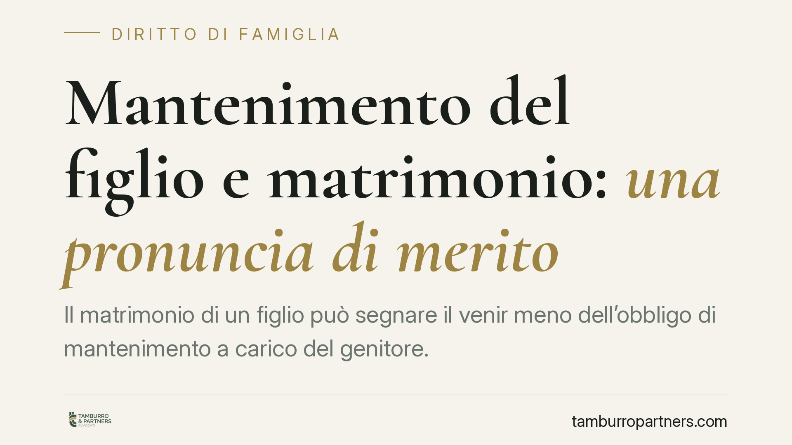

Mantenimento del figlio e matrimonio: una pronuncia di merito
Il matrimonio di un figlio può segnare il venir meno dell'obbligo di mantenimento a carico del genitore. Una pronuncia di merito affronta il tema, aprendo al possibile recupero delle somme versate dopo quel momento. La questione, però, non è automatica: pesano la non autosufficienza e il delicato limite dell'irripetibilità delle somme già consumate.

Il fatto
Il tema torna d'attualità per effetto di una pronuncia di merito attribuita al Tribunale di Palermo. Il nodo è se, e in che misura, il matrimonio del figlio faccia cessare l'obbligo di mantenimento del genitore e consenta a quest'ultimo di recuperare quanto versato dopo le nozze.
Precisiamo subito un punto di metodo: si tratterebbe di una decisione di primo grado, non di un orientamento consolidato della Cassazione. Il numero e l'anno della sentenza circolati in rete non risultano al momento verificabili con certezza; per questo ne richiamiamo il principio senza attribuirle un valore che non ha. Chi intenda muoversi su questa base deve riscontrarne autonomamente l'esistenza e il contenuto.
Inquadramento normativo
L'obbligo di mantenimento del figlio non ha un termine fisso: non cessa al compimento dei diciotto anni, ma si protrae finché il figlio non raggiunge l'autosufficienza economica, cioè la capacità di provvedere a sé con redditi propri. È su questo concetto, e non su un automatismo legato alla data del matrimonio, che va ancorato ogni ragionamento.
Il matrimonio del figlio rileva perché crea una nuova rete di obbligazioni. L'art. 433 c.c. fissa l'ordine degli obbligati agli alimenti e colloca il coniuge in posizione prioritaria rispetto ai genitori; l'art. 441 c.c. regola il concorso tra più obbligati quando l'onere deve essere ripartito. In sintesi: con il matrimonio il figlio bisognoso guarda anzitutto al coniuge, e l'obbligo del genitore tende a recedere.
Sul versante del recupero entra in gioco l'art. 2033 c.c., che disciplina la ripetizione dell'indebito: chi paga ciò che non doveva può in linea di principio chiederne la restituzione. Sul piano esecutivo, il genitore destinatario di un titolo di pagamento può opporsi tramite l'opposizione all'esecuzione prevista dall'art. 615 c.p.c.
Il limite da non sottovalutare: l'irripetibilità
Qui sta il punto più delicato, spesso trascurato. La giurisprudenza distingue nettamente tra:
- ratei non ancora riscossi, rispetto ai quali l'opposizione del genitore ha margini più ampi;
- somme già percepite e consumate dal figlio per il proprio mantenimento, tradizionalmente considerate irripetibili.
Il principio di irripetibilità delle prestazioni di mantenimento già spese risponde a una logica precisa: quelle somme servono a bisogni quotidiani che non si possono "restituire". Pretendere il rimborso di quanto già consumato incontra quindi resistenze non trascurabili. Una pronuncia di merito può discostarsene nel caso concreto, ma non sposta un orientamento diffuso. Per questo la prospettiva del recupero va considerata con prudenza, non come esito scontato.
Implicazioni pratiche
Per il genitore obbligato, il messaggio è duplice. Da un lato, il matrimonio del figlio è un fatto giuridicamente rilevante che può incidere sulla permanenza dell'obbligo. Dall'altro, questa incidenza non è un interruttore automatico: va dimostrata la cessazione della condizione di bisogno e, soprattutto, non è detto che si possa recuperare ciò che è già stato versato e speso.
Continuare a pagare per inerzia, senza far constatare il mutamento della situazione, espone a versamenti difficilmente recuperabili. Al contrario, sospendere i pagamenti di propria iniziativa, senza un provvedimento o un titolo che lo consenta, espone ad azioni esecutive.
Cosa fare in concreto
- Documenta il cambiamento: raccogli atto di matrimonio del figlio ed elementi sulla sua condizione economica e su quella del coniuge.
- Verifica il titolo: controlla cosa prevede esattamente la sentenza o l'accordo che fissa l'assegno, incluse le condizioni di cessazione.
- Non interrompere i pagamenti d'impulso: valuta prima la strada di una modifica delle condizioni o dell'opposizione all'esecuzione ex art. 615 c.p.c.
- Distingui ciò che chiedi: separa i ratei non ancora corrisposti dalle somme già versate, tenendo conto del limite di irripetibilità delle somme consumate.
- Riscontra la giurisprudenza: non fondare una strategia su una singola pronuncia di merito non verificata; verifica l'esistenza del precedente e il quadro complessivo.
Un esame del caso concreto è opportuno prima di qualsiasi iniziativa, perché l'esito dipende da elementi di fatto specifici che una regola generale non può anticipare.
---
*Contributo informativo a cura di Tamburro & Partners - Avv. Giuseppe Tamburro. Non costituisce parere legale.*
Ogni famiglia ha il suo equilibrio.
Separazione, divorzio, affidamento, assegno: se vuoi un confronto riservato su una specifica situazione, scrivi allo studio. Ti rispondiamo entro un giorno lavorativo.